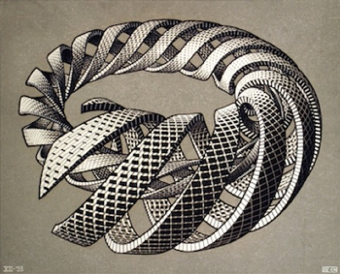

Hello World!
This is the first post on a new blog I'm starting. The previous, purely technical, one is moved to a different URL and the focus of this one is on more personal stuff I'm interested in.
The best/simplest way to start blogging is in 2021 a combination of Zola and Github pages. All content is written in markdown and because I'm writing mainly prose here, no special extension is needed (as opposed to the technical stuff). This means that everything is compiling blazingly fast and works really smoothly. (awesome 🦀)
For a theme I shortly skipped over the theme list and chose anpu 'cause it's the most pleasing to the eyes and now I can sort everything with tags :) I still have to write a workflow which automatically publishes the website to a github page repository. This is also super easy because zola provides the action to do this here.
It's saturday and I'm listening to BBC from Germany 😄 and enjoying the day. Anyways welcome to my new blog, have fun and a good day!
